5.4 Реестры документов¶
Разделы ГИСОГД, перечисленные в разделе 5.1, ведутся в отдельных реестрах. В каждом реестре создаются записи об объектах соответствующего вида, а к записям прикрепляются документы ГИСОГД. Поэтому заполнение сведений по разделам выполняется через карточки записей соответствующих реестров.
5.4.1 Документы территориального планирования Российской Федерации¶
В раздел «Документы территориального планирования Российской Федерации» вносятся документы федерального уровня, относящиеся к территории региона. Например, схема территориального планирования Российской Федерации (СТП РФ) в области энергетики, СТП РФ в области федерального транспорта и автомобильных дорог.
5.4.2 Документы территориального планирования двух и более субъектов Российской Федерации, документы территориального планирования субъектов Российской Федерации¶
В раздел вносятся сведения о схеме территориального планирования региона, документы СТП, а также документы об утверждении или внесении изменений в СТП.
Схема территориального планирования субъекта Российской Федерации содержит положения о территориальном планировании и карты планируемого размещения объектов регионального значения в следующих сферах: транспорт, предупреждение чрезвычайных ситуаций, образование, спорт, здравоохранение, энергетика.
5.4.3 Документы территориального планирования муниципальных образований¶
В раздел «Документы территориального планирования муниципальных образований» вносятся генеральные планы городских и муниципальных округов, а также схемы территориального планирования муниципальных районов (рисунок 60).
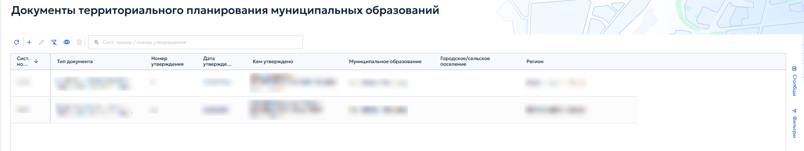
Документы территориального планирования федерального, межрегионального, регионального и муниципального уровней включают в себя текстовую и графическую часть и определяют направления развития территории соответствующего уровня. Например, региональная схема территориального планирования (РСТП) показывает расположение объектов регионального значения, дорожной и инженерной инфраструктуры, их характеристики. Планируемые объекты наносятся на карту, а сами документы заносятся в реестр ГИСОГД.
Ниже приведен порядок внесения документа территориального планирования на примере генерального плана городского округа.
5.4.3.1 Создание записи¶
Для создания записи выполнить следующие действия:
-
на панели инструментов реестра нажать кнопку «Добавить»;
-
в открывшейся карточке заполнить атрибуты (рисунок 61).
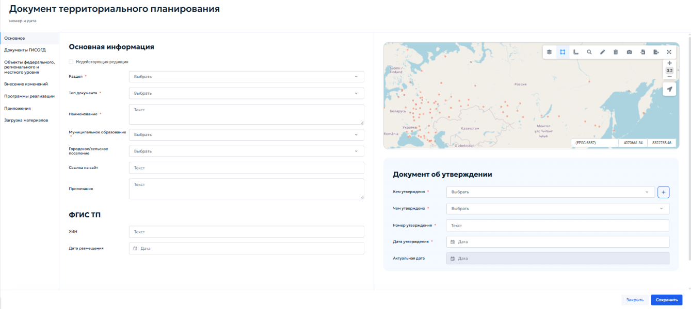
5.4.3.2 Заполнение вкладки «Основно延
Во вкладке «Основное» в блоке «Основная информация» выбрать следующие данные:
-
«Раздел» — выбрать значение «Документы территориального планирования муниципальных образований»;
-
«Тип документа» — выбрать «Генеральный план городского округа, муниципального округа»;
-
«Наименование» — ввести полное наименование в соответствии с утвержденным документом;
-
«Муниципальное образование» — выбрать из списка нужный городской округ или муниципальный район;
-
«Городское/сельское поселение» — при необходимости выбрать поселение;
-
«Ссылка на сайт» — указать адрес страницы муниципалитета, на которой размещен документ;
-
«Примечания» — внести дополнительные сведения, например об изменениях документа.
В блоке «Документ об утверждении» указать:
-
«Кем утверждено» — выбрать из выпадающего списка орган или должностное лицо, утвердившее документ;
-
«Чем утверждено» — выбрать вид нормативного правового акта: «Указ», «Распоряжение», «Решение», «Постановление» или «Приказ»;
-
«Номер утверждения» — ввести номер документа;
-
«Дату утверждения» — указать дату акта с помощью календаря;
-
«Актуальная дата» — поле заполняется автоматически на основании даты последнего документа ГИСОГД о внесении изменений. Ручное редактирование не требуется.
Нанесение границ выполняется вручную средствами рисования геометрии на карте или путем импорта геометрии из файла. Порядок рисования геометрии описан в разделе 4.5.2.10. Общий вид карточки документа территориального планирования приведен на рисунке 62.
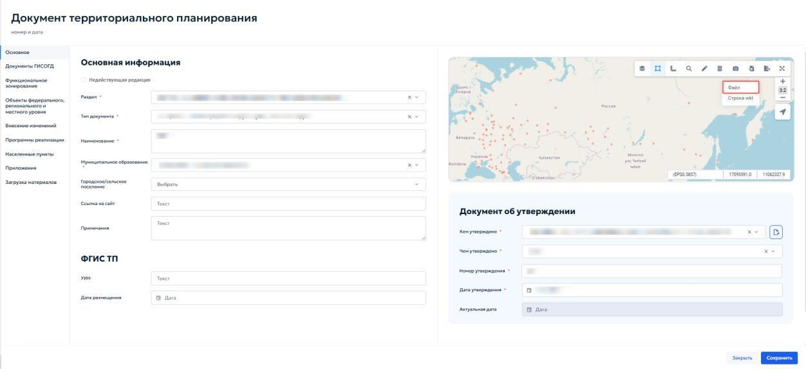
На карте нажать кнопку «Импорт» и выбрать пункт меню «Файл» (рисунок 63).
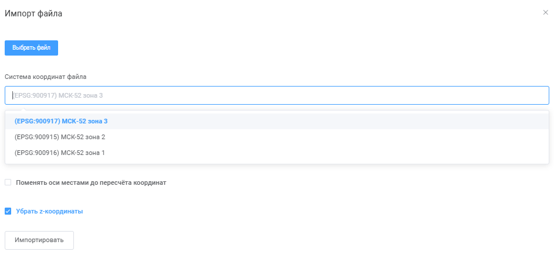
В окне импорта выбрать файл с координатами — обычно используется формат MIF. В поле «Система координат» ввести «МСК». Система предложит доступные варианты местных систем координат (рисунок 64).
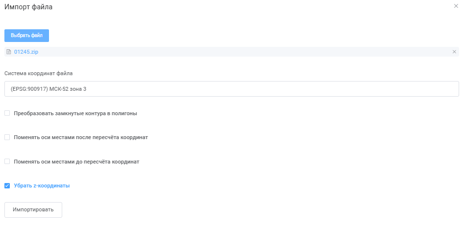
По координатам из файла определить нужную зону: если координата X начинается с 1 миллиона, это первая зона (МСК-1, МСК-2 и т. д.). Выбрать соответствующую систему координат (рисунок 65).
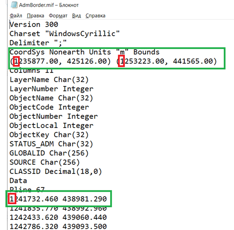
Для загрузки координат и границ загруженных объектов нажать кнопку «Импортировать».
5.4.3.3 Добавление документов ГИСОГД¶
Во вкладке «Документы ГИСОГД» внести материалы генерального плана или схемы территориального планирования, а также правовые документы об утверждении или внесении изменений (рисунок 66).
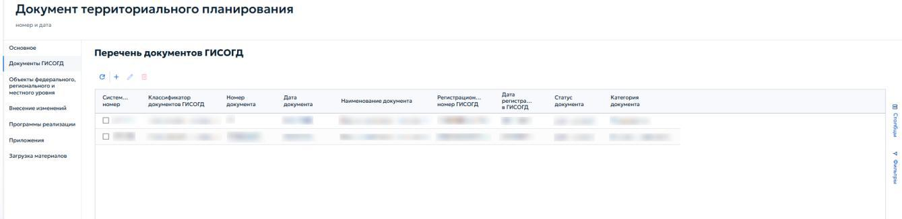
Для добавления документа ГИСОГД нажать кнопку на панели инструментов. В карточке необходимо заполнить реквизиты документа ГИСОГД и приложить файлы для документа.
Во вкладке «Приложенные файлы» в генеральном плане прикрепляются текстовая часть генерального плана, схемы и правовой документ об утверждении или о внесении изменений в генеральный план (рисунок 67). При наличии документов о публичных слушаниях они также прикрепляются во вкладке «Приложенные файлы».
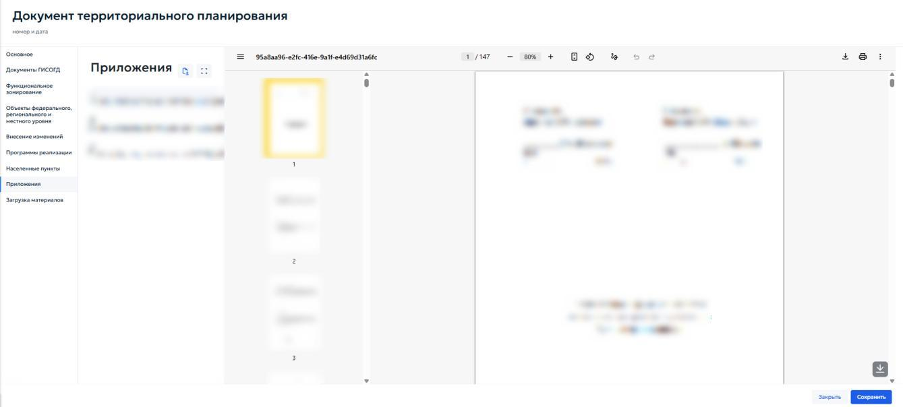
Вкладка «Функциональное зонирование» в карточке генерального плана позволяет внести перечень функциональных зон, включенных в схему функционального зонирования генерального плана (рисунок 68).
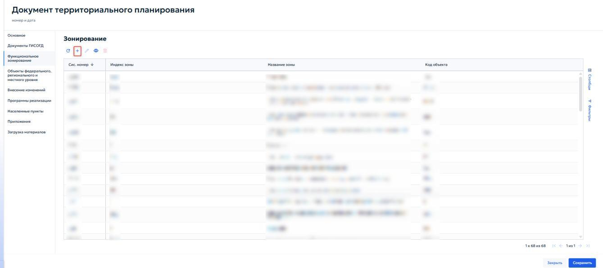
Открывшаяся карточка функциональной зоны включает в себя информационный блок «Информация об объекте», в составе которого находятся следующие поля:
-
«Код объекта» — уникальный код контура; допускается совпадение с кодом функциональной зоны;
-
«Индекс зоны» — указать краткое буквенно-цифровое обозначение зоны;
-
«Название зоны» — ввести полное наименование функциональной зоны в соответствии с генеральным планом;
-
«Название по CLASSID» — при необходимости указать текстовую характеристику зоны.
Если зона является архивной, установить флажок «Архивная зона» в начале блока.
Карточка «Функциональная зона» показана на рисунке 69.
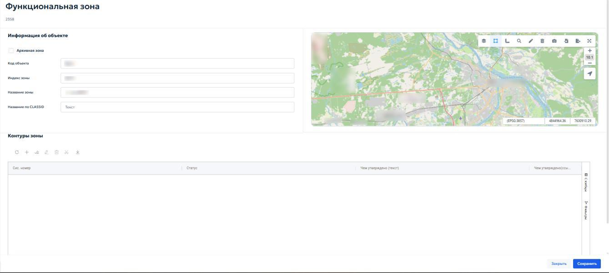
Блок «Контуры зоны» содержит таблицу, в которой перечислены все пространственные контуры данной функциональной зоны (рисунок 70). Таблица включает следующие столбцы:
-
«Системный номер» — системный номер контура;
-
«Статус» — состояние контура;
-
«Чем утверждено (текст)» — краткое описание документа-основания;
-
«Чем утверждено (ссылка)» — ссылка на документ ГИСОГД, которым утвержден контур (рисунок 70).
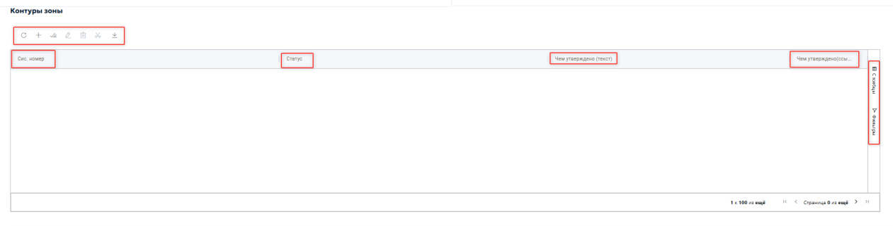
Панель инструментов блока позволяет редактировать, загружать и удалить действующий контур. При нажатии на кнопку
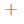
открывается карточка «Контуры функциональных зон». Она предназначена для добавления или редактирования пространственного контура. Общий вид карточки приведен на рисунке 71.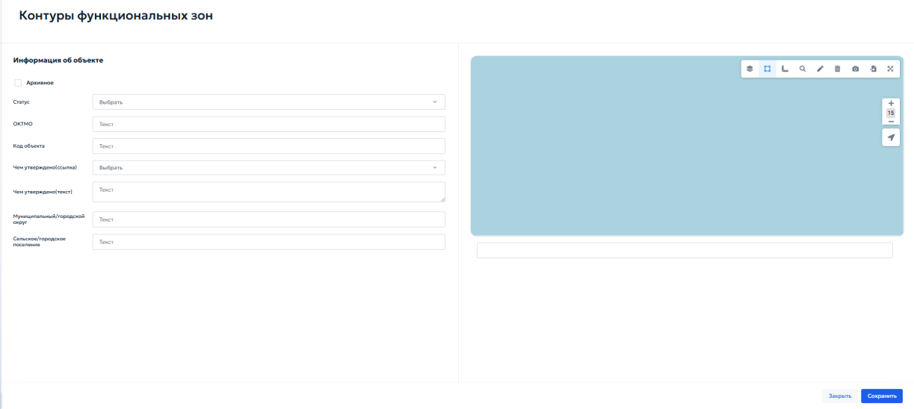
Внутри карточки находится информационный блок «Информация об объекте», который состоит из следующих элементов:
-
«Архивное» — флажок, который устанавливается, если контур утратил актуальность;
-
«Статус» — выбрать значение из выпадающего списка: «существующий» — действующий контур или «планируемый» — контур, который планируется к установке в будущем;
-
«ОКТМО» — код муниципального образования;
-
«Код объекта» — уникальный код контура;
-
«Чем утверждено (ссылка)» — выбрать из выпадающего списка документ ГИСОГД, которым утвержден данный контур. В списке отображаются реквизиты документов — номер, дата, дата регистрации, извещающая организация. Для выбора щелкнуть левой кнопкой мыши по нужной строке;
-
«Чем утверждено» — указать, каким документом утверждена новая функциональная зона;
-
«Муниципальный/городской округ» — выбрать из списка муниципальное образование, на территории которого расположен контур;
-
«Сельское/городское поселение» — при необходимости выбрать поселение из списка.
Код объекта для функциональной зоны генплана введен Приказом Министерства экономического развития РФ от 9 января 2018 г. № 10 «Об утверждении Требований к описанию и отображению в документах территориального планирования объектов федерального значения, объектов регионального значения, объектов местного значения и о признании утратившим силу приказа Минэкономразвития России от 7 декабря 2016 г. № 793». Генеральные планы, разработанные до даты приказа, кодов объекта не имеют.
5.4.3.4 Загрузка материалов¶
Загрузка материалов выполняется во вкладке «Загрузка материалов» карточки документа территориального планирования. Вкладка содержит блок «Загрузка пространственных данных».
Вкладка предназначена для импорта векторных данных функциональных зон и объектов территориального планирования из файлов (рисунок 72).
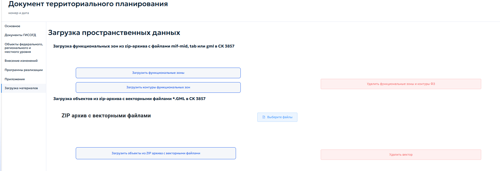
При нажатии кнопки «Загрузить функциональные зоны» система открывает окно «Импорт» с кнопкой «Выбрать». При нажатии кнопки «Выбрать» открывается проводник операционной системы. После выбора архива система автоматически обрабатывает файлы и добавляет функциональные зоны в соответствующий реестр (рисунок 73). Данный функционал работает аналогично при нажатии других кнопок в блоке «Загрузка пространственных данных».
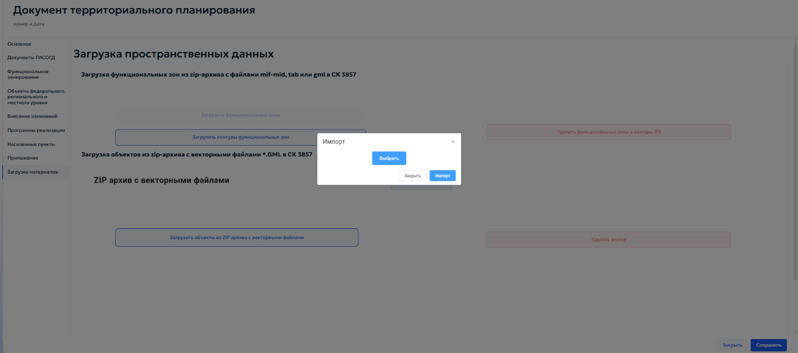
Кнопка «Загрузить контуры функциональных зон» предназначена для импорта геометрии контуров функциональных зон из ZIP-архива с векторными файлами формата GML в системе координат EPSG:3857.
Кнопка «Загрузить объекты из ZIP-архива с векторными файлами» предназначена для импорта архива, содержащего векторные файлы формата GML.
Кнопка «Выберите файлы» — открывает стандартное окно операционной системы для выбора файлов на локальном компьютере.
Кнопка «Удалить вектор» — удаляет все загруженные ранее векторные данные текущего документа.
5.4.4 Нормативы градостроительного проектирования¶
Нормативы градостроительного проектирования устанавливают обязательные требования при строительстве и реконструкции объектов капитального строительства на территории муниципального образования. Они определяют расчётные параметры, которые необходимо учитывать при разработке документации по планировке территории: максимальные значения коэффициента плотности застройки, жилищную обеспеченность, размеры земельных участков для размещения многоквартирных жилых домов и т. п.
В раздел «Нормативы градостроительного проектирования» вносятся документы ГИСОГД — нормативы градостроительного проектирования и правовые акты об их утверждении или о внесении изменений. Для каждого муниципалитета в реестре создаётся одна запись, к которой прикрепляются соответствующие документы ГИСОГД.
Документы этого раздела не содержат картографических данных, поэтому в карточке записи отсутствует окно карты (рисунок 74).
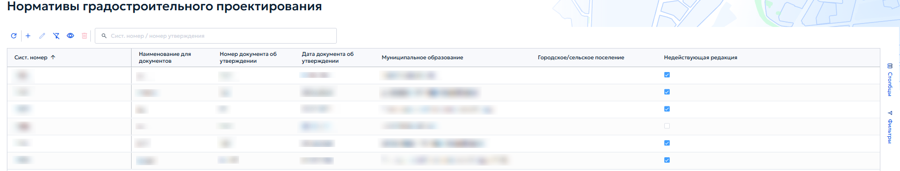
При добавлении или редактировании записи открывается карточка «Нормативы градпроектирования» (рисунок 75). В верхней части карточки отображаются дата создания и системный номер записи.
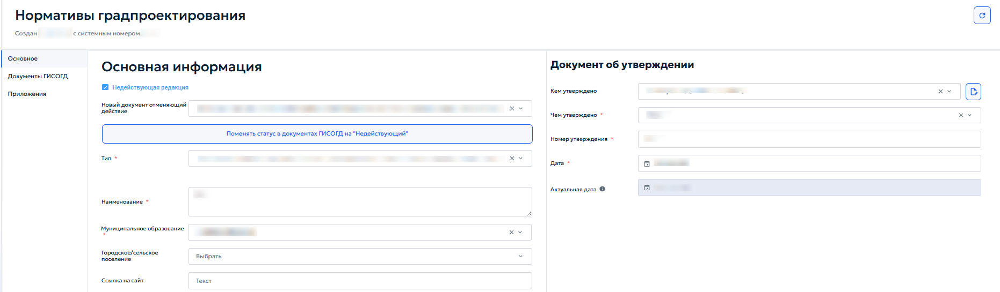
Вкладка «Основное» содержит два информационных блока: «Основная информация» и «Документ об утверждении».
В состав блока «Основная информация» входят следующие информационные поля и флажки:
-
«Недействующая редакция» — если норматив утратил силу, здесь отображается ссылка на документ, которым он отменен. Кнопка «Поменять статус в документах ГИСОГД на „Недействующий“» позволяет перевести связанные документы ГИСОГД в статус недействующих;
-
«Тип» — выбрать тип норматива из выпадающего списка;
-
«Наименование» — ввести полное наименование норматива;
-
«Муниципальное образование» — выбрать муниципальное образование из списка;
-
«Городское/сельское поселение» — при необходимости выбрать поселение;
-
«Ссылка на сайт» — указать адрес страницы, где опубликован документ.
В состав блока «Документ об утверждении» входят следующие поля:
-
«Кем утверждено» — выбрать орган или должностное лицо, утвердившее норматив;
-
«Чем утверждено» — выбрать вид нормативного правового акта из выпадающего списка;
-
«Номер утверждения» — ввести номер документа;
-
«Дата» — указать дату утверждения с помощью календаря;
-
«Актуальная дата» — поле заполняется автоматически по дате документа ГИСОГД о внесении изменений.
5.4.5 Градостроительное зонирование¶
В раздел «Градостроительное зонирование» вносятся правила землепользования и застройки территорий (далее — ПЗЗ), нормативные правовые акты об утверждении или внесении изменений в ПЗЗ, а также материалы публичных слушаний (рисунок 76). Для каждого муниципального образования в реестре создаётся одна запись, к которой прикрепляются документы ГИСОГД. В карточке записи ведётся реестр территориальных зон в соответствии с ПЗЗ.
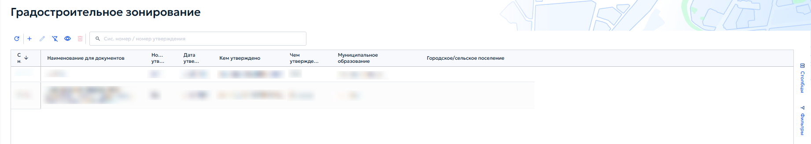
При добавлении или редактировании записи открывается карточка «Градостроительное зонирование» (рисунок 77). Карточка содержит следующие вкладки: «Основное», «Документы ГИСОГД», «Территориальное зонирование», «Приложения».
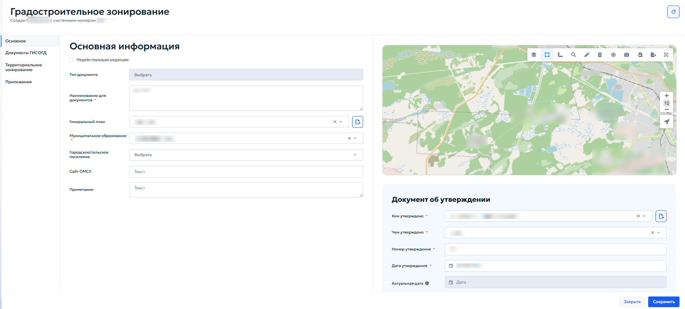
Порядок заполнения блоков «Основная информация» и «Документ об утверждении» аналогичен порядку создания записи, описанному в пункте 5.4.3.1 настоящего Руководства.
В поле «Генеральный план» указать соответствующий генеральный план муниципального образования.
Во вкладке «Документы ГИСОГД» прикрепить файлы ПЗЗ и правовые акты об утверждении или внесении изменений. Порядок добавления документа ГИСОГД описан в пункте 5.4.3.3.
5.4.5.1 Вкладка «Территориальное зонировани延
Вкладка предназначена для ведения списка территориальных зон, установленных ПЗЗ (рисунок 78).
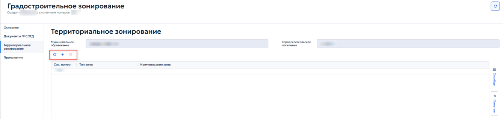
Добавление, редактирование и удаление зон выполняется с помощью кнопок панели инструментов. При создании или редактировании зоны открывается карточка «Территориальная зона» (рисунок 79).
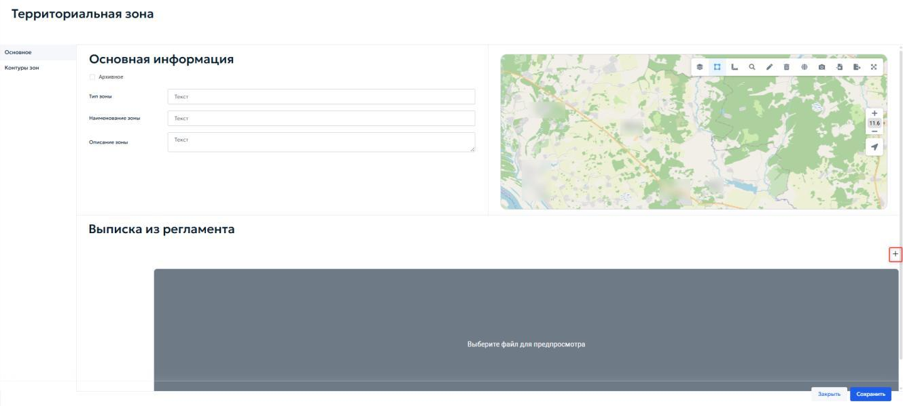
Во вкладке «Основное» в блоке «Основная информация» указываются следующие поля:
-
«Тип зоны» — ввести наименование типа территориальной зоны;
-
«Наименование зоны» — ввести наименование в соответствии с ПЗЗ;
-
«Описание зоны» — поле для текстового описания (при необходимости).
Если зона утратила актуальность и является архивной, установить флажок «Архивное» в начале блока.
В блоке «Выписка из регламента» для прикрепления файла с градостроительным регламентом нажать кнопку «Выберите файлы»
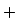
.Вкладка «Градостроительные регламенты» предназначена для ведения перечня видов разрешённого использования (ВРИ) земельных участков и объектов капитального строительства в пределах территориальной зоны. Для каждого ВРИ указываются тип и наименование из справочника (рисунок 80).
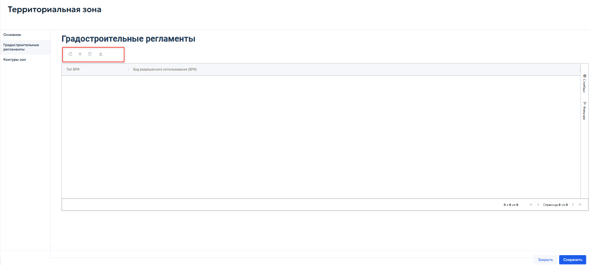
Добавление, редактирование и удаление записей выполняются с помощью кнопок панели инструментов таблицы.
Для настройки параметров, установленных градостроительным регламентом для конкретного вида разрешенного использования, нажать кнопку «Добавить»
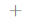
. Откроется карточка «Предельные величины» (рисунок 81).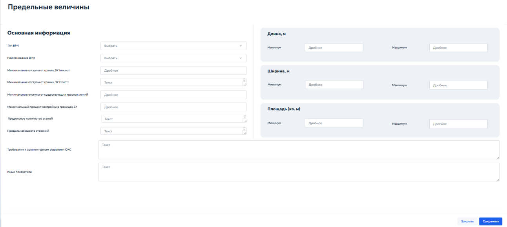
В блоке «Основная информация» указать следующие параметры:
-
«Тип ВРИ» — выбрать из выпадающего списка необходимый вариант;
-
«Наименование ВРИ» — выбрать вид разрешенного использования из справочника;
-
«Минимальные отступы от границ ЗУ (число)» — ввести числовое значение отступа в метрах;
-
«Минимальные отступы от границ ЗУ (текст)» — при необходимости указать текстовое описание отступов;
-
«Минимальные отступы от существующих красных линий» — ввести значение отступа в метрах (дробное число);
-
«Максимальный процент застройки в границах ЗУ» — указать максимально допустимый процент застройки земельного участка;
-
«Предельное количество этажей» — указать максимальное количество этажей (текст или число);
-
«Предельная высота строений» — указать максимальную высоту зданий (текст);
-
«Требования к архитектурным решениям ОКС» — ввести текстовые требования (при наличии);
-
«Иные показатели» — при необходимости указать дополнительные параметры.
В параметрах длины, ширины и площади указать:
-
«Длина, м» — указать дробное значение «Минимума» и «Максимума» необходимой длины объекта;
-
«Ширина, м» — указать дробное значение «Минимума» и «Максимума» необходимой ширины объекта;
-
«Площадь (кв. м)» — указать дробное значение «Минимума» и «Максимума» площади земельного участка или объекта капитального строительства в квадратных метрах.
После заполнения карточки и сохранения данных вернуться в реестр «Территориальная зона» и перейти во вкладку «Контуры зоны» (рисунок 82).
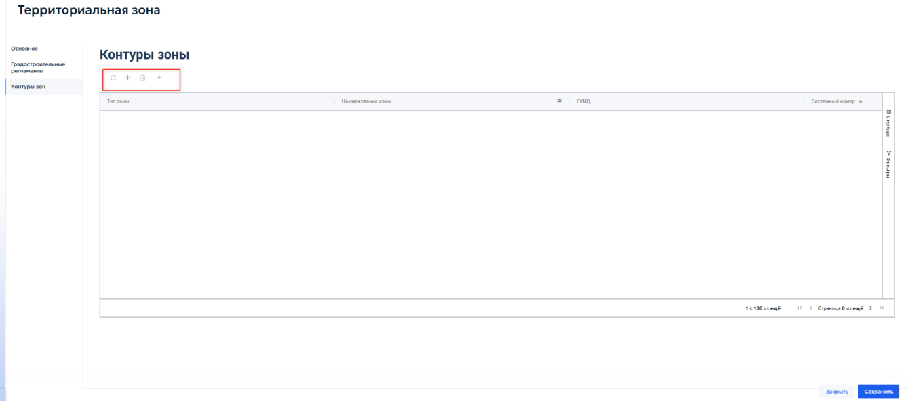
Вкладка предназначена для отображения и управления пространственными границами — контурами территориальной зоны. Контуры представляют собой полигоны, нанесенные на карту, и определяют местоположение зоны на местности.
Добавление, редактирование и удаление записей выполняются с помощью кнопок панели инструментов, расположенной над таблицей.
При нажатии кнопки «Добавить»
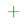
откроется карточка «Контуры зон» (рисунок 83).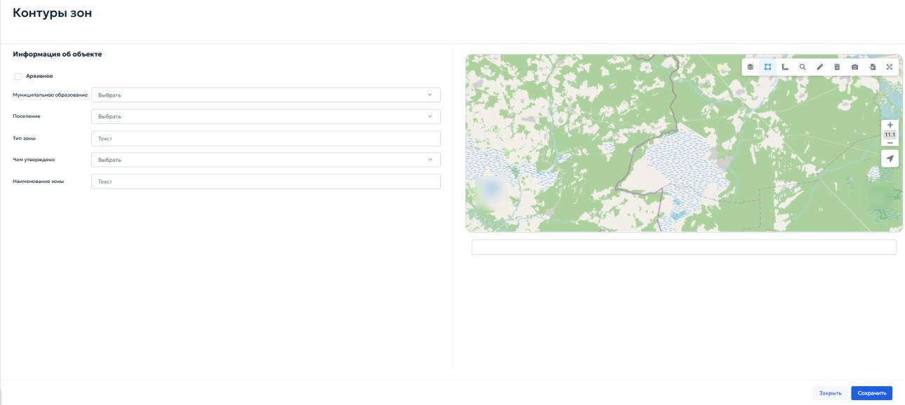
Карточка предназначена для указания параметров пространственного контура и загрузки его геометрии.
В блоке «Информация об объекте» заполнить следующие поля:
-
«Муниципальное образование» — выбрать из выпадающего списка муниципальное образование, на территории которого расположен контур;
-
«Поселение» — при необходимости выбрать городское или сельское поселение;
-
«Тип зоны» — отображается автоматически (наследуется из карточки территориальной зоны). Поле доступно только для просмотра;
-
«Чем утверждено» — выбрать из выпадающего списка документ ГИСОГД, которым утверждён данный контур (например, правовой акт об утверждении ПЗЗ или о внесении изменений);
-
«Наименование зоны» — отображается автоматически (наследуется из карточки территориальной зоны). Поле доступно только для просмотра.
Если контур является архивным, установить флажок «Архивное» в начале блока.
5.4.6 Правила благоустройства территории¶
В раздел «Правила благоустройства территории» вносятся документы, регулирующие вопросы благоустройства на муниципальном уровне. К таким документам относятся:
-
правила благоустройства территории муниципального образования;
-
нормативные правовые акты, которыми утверждены правила благоустройства территории или внесены изменения в них;
-
закон субъекта Российской Федерации, которым утвержден порядок определения границ прилегающих территорий.
Раздел «Правила благоустройства территории» показан на рисунке 84.
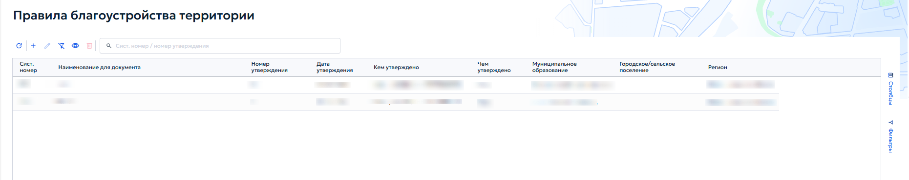
При добавлении или редактировании записи открывается одноименная с реестром карточка (рисунок 85).
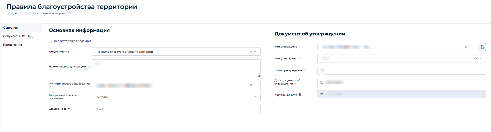
Во вкладке «Основное» в блоке «Основная информация» указать следующие данные:
-
«Тип документа» — поле заполняется автоматически значением «Правила благоустройства территории»;
-
«Наименование для документа» — ввести полное наименование документа в соответствии с утвержденным актом;
-
«Муниципальное образование» — выбрать из выпадающего списка муниципальное образование, для которого разработаны правила;
-
«Городское/сельское поселение» — при необходимости выбрать поселение;
-
«Ссылка на сайт» — указать адрес страницы, где опубликован документ.
Если редакция является недействующей, установить флажок «Недействующая редакция» и выбрать в появившемся выпадающем списке необходимый вариант.
В блоке «Документ об утверждении» указать следующие данные:
-
«Кем утверждено» — выбрать орган или должностное лицо в выпадающем списке, утвердившее правила благоустройства;
-
«Чем утверждено» — выбрать вид нормативного правового акта из выпадающего списка;
-
«Номер утверждения» — ввести номер документа;
-
«Дата документа об утверждении» — указать дату утверждения с помощью календаря;
-
«Актуальная дата» — поле заполняется автоматически по дате последнего документа ГИСОГД о внесении изменений.